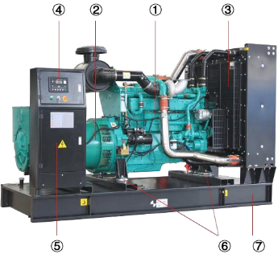
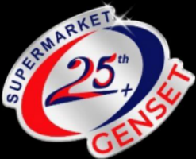
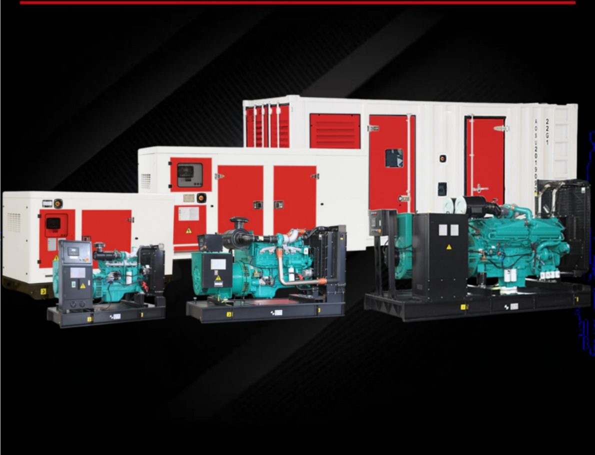
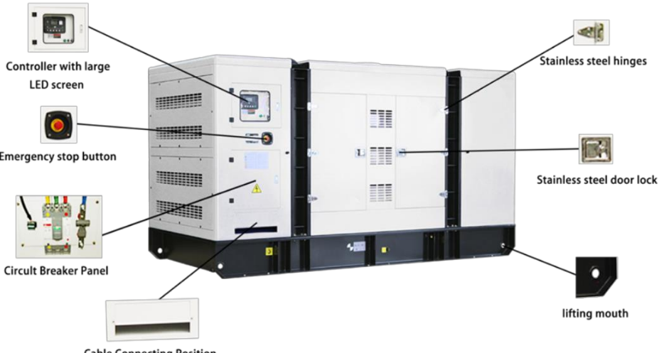

CUMMINS SERIES

Ilustrasi konfigurasi dari brosurCHONGQING CUMMINS · KTAA19-G6
Genset Cummins
575 kVA
Daya untuk operasional bisnis dan industri, dengan pilihan konfigurasi Open dan Silent.
3 fase50 Hz1.500 rpm230 / 400 V

SUPERMARKETGENSET.Genset untuk kebutuhan operasional, proyek, dan industri. Temukan unit yang tepat, dengan dukungan dari pemilihan hingga perawatan.

Unit diproduksi & dikirim
kW daya tersuplai
Pelanggan mempercayai kami
Merek internasional pendukung
PENGALAMAN MELAYANI SEKTOR PERBANKAN
Layanan pembelian dan penyewaan untuk kebutuhan pelanggan korporasi.
01 / PRODUK PILIHAN
Kenali Cummins Series pertama dalam katalog kami. Data teknis lengkap untuk membantu Anda mengambil keputusan.

Ilustrasi konfigurasi dari brosurCHONGQING CUMMINS · KTAA19-G6
Daya untuk operasional bisnis dan industri, dengan pilihan konfigurasi Open dan Silent.
LEBIH DEKAT DENGAN UNIT ANDA
Mesin diesel 6 silinder, 19 liter, dengan sistem turbocharged dan air-to-air cooled. Controller Deepsea 6120 membantu pemantauan serta proteksi unit.
Angka berdasarkan technical specification yang tersedia.
| Beban | Konsumsi |
|---|---|
| 100% Standby | 145 L/jam |
| 100% Prime | 133 L/jam |
| 75% Prime | 98,8 L/jam |
| 50% Prime | 66,6 L/jam |
| 25% Prime | 38 L/jam |
Open untuk kebutuhan ruang mesin khusus. Silent dilengkapi canopy peredam suara. Tim kami membantu menyesuaikan konfigurasi dengan kondisi lokasi.

| Spesifikasi | Open | Silent |
|---|---|---|
| Panjang | 3.500 mm | 4.200 mm |
| Lebar | 1.450 mm | 1.900 mm |
| Tinggi | 2.230 mm | 2.480 mm |
| Berat | 4.650 kg | 5.550 kg |
| Tangki | 970 L | 970 L |
Mesin, alternator AC, radiator, panel kontrol, breaker, rangka, peredam getaran, exhaust silencer, bellow, dan baterai starting tercantum dalam lingkup suplai.
Opsi sesuai kebutuhan: ATS, sistem sinkronisasi, tangki eksternal, trailer, dan pemanas mesin. Konfirmasi konfigurasi akhir dengan tim kami.
02 / SEWA GENSET
Untuk proyek, kebutuhan operasional sementara, atau dukungan daya cadangan. Ceritakan lokasi dan durasi Anda; tim kami membantu menentukan unit serta penawarannya.
Diskusikan kebutuhan sewa ↗Lokasi, jadwal, durasi, dan perkiraan daya.
Kapasitas dan konfigurasi dibahas bersama tim.
Ketersediaan, logistik, dan layanan disepakati sebelum sewa.
03 / LAYANAN TERINTEGRASI
Dukungan sepanjang perjalanan genset Anda, dari memilih unit hingga menjaga performanya.
Pemilihan kapasitas dan konfigurasi untuk kebutuhan bisnis Anda.
Diskusikan pemasangan baru atau pemindahan unit ke lokasi berikutnya.
Dukungan teknis, maintenance, dan kebutuhan suku cadang.
Pendampingan kebutuhan perizinan terkait instalasi genset Anda.
SUPERMARKET GENSET
Kami membantu pelanggan mendapatkan solusi daya yang sesuai kebutuhan dan anggaran. Dari pembelian unit sampai penyewaan dan layanan teknis, setiap kebutuhan dimulai dengan memahami kondisi bisnis Anda.
Berbasis di Jakarta Barat, melayani kebutuhan pelanggan di seluruh Indonesia.
Kabel telah terpasang
Filter telah diganti
PERTANYAAN UMUM
Pilih “Belum tahu” di formulir dan ceritakan peralatan atau kebutuhan operasional Anda. Tim kami akan membantu melakukan konsultasi kapasitas.
Brosur unit ini mencantumkan 575 kVA Prime dan 650 kVA Standby. Pemilihan rating disesuaikan dengan pola pemakaian; diskusikan durasi operasi dan beban dengan tim kami.
Spesifikasi Cummins 575 kVA yang tersedia mencakup keduanya. Detail ukuran dan berat dapat dilihat pada tab Dimensi & tipe.
Kirim lokasi, tanggal mulai, durasi, dan kebutuhan daya melalui formulir konsultasi. Tim akan mengonfirmasi ketersediaan unit dan penawarannya.
MULAI DARI PERCAKAPAN
Isi kebutuhan Anda. Tombol di bawah akan membuka aplikasi email dengan ringkasan siap kirim kepada tim sales.
sales@supermarketgenset.com ↗(021) 58908321–23 ↗Belum tahu detail teknisnya? Tidak masalah. Tim kami membantu Anda memilih.